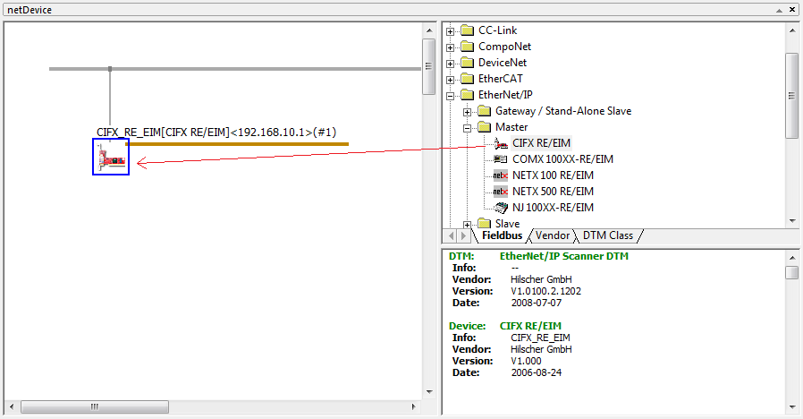
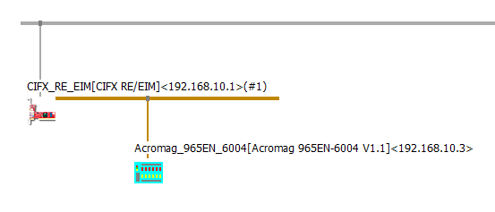
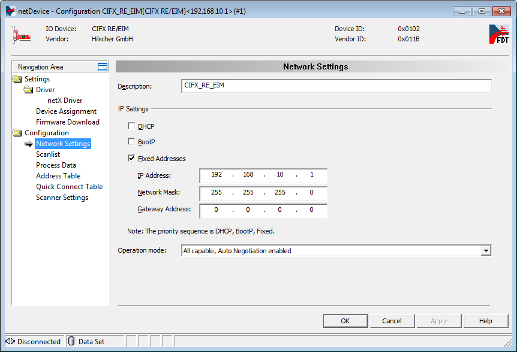
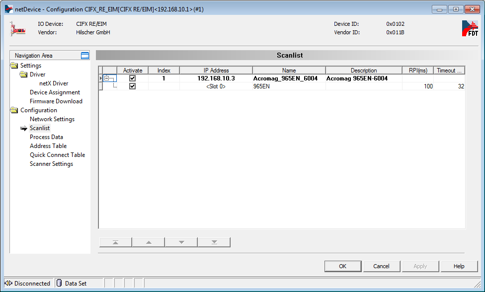
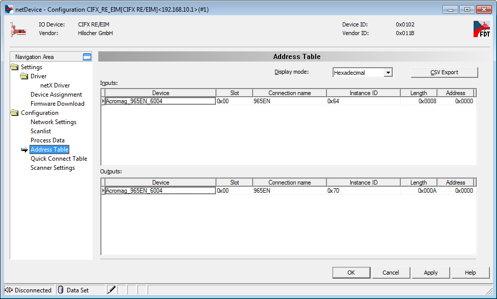
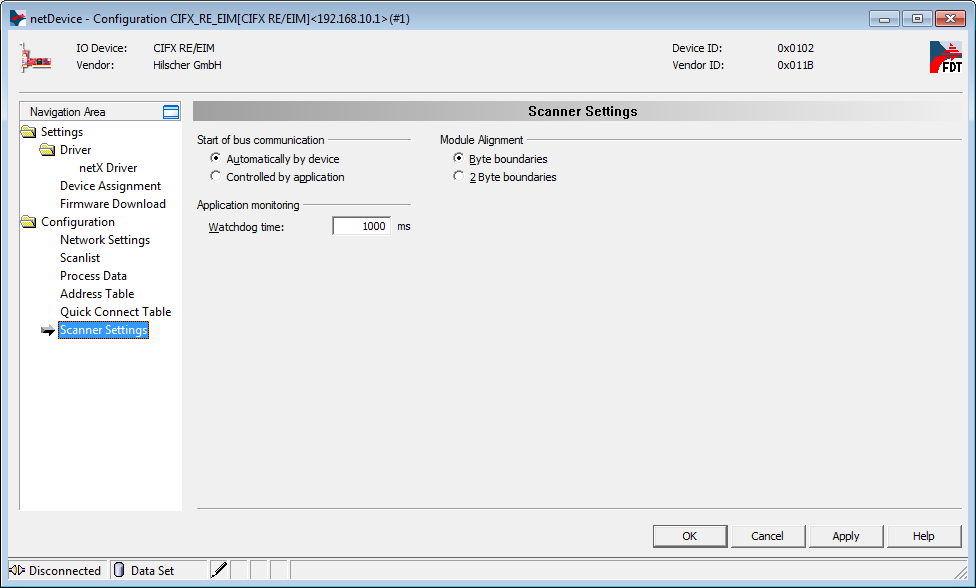

IO755 Usage Notes
IO755 Usage Notes — Usage information about the I/O module
I/O Module configuration with SYCON.net
During initialization of the real-time application, the block reads two configuration files from the hard drive of the target machine and configures the EtherNet/IP Scanner protocol stack. Use the SYCON.net configuration tool to create such files.
![[Tip]](images/tip.png) | Tip |
|---|---|
Download the SYCON.net configuration tool from the Speedgoat Customer Portal. Login to your Speedgoat account. In the Downloads section, navigate to Software and click SYCON.net (v1.500 Build 231214). |
In addition to this short introduction, please read the SYCON.net help documentation for detailed information about how to set up an EtherNet/IP network and export the module configuration file.
Open SYCON.net and locate the "CIFX RE/EIM" device. Drag and drop the device to the main panel.

From the lists Stand-Alone Slave and Slave you can select Ethernet/IP adapters to add to the EtherNet/IP network. Simply drag and drop the devices.

![[Note]](images/note.png)
Note You can add EDS files of others devices by following Network, Import Device Description.
Double-click on the icon to open the Configuration window.
Navigate to Configuration, Network Settings. You can select all available options.

Navigate to Configuration, Scanlist. For each connected device you can modify the IP address, the Requested Packet Interval (RPI, in ms), and the timeout.

Navigate to Configuration, Address Table. Note the Length and Address information that you will need when configuring the Simulink driver blocks.

Navigate to Configuration, Scanner Settings.

Apply the configuration and close the windows. Right click on the Scanner icon and select Additional Functions, Export, DBM/nxd.
Select a name for the file, e.g.: scanner.nxd. Save the file in your current MATLAB workspace.
Note This operation will generate two files:
scanner.nxd scanner_nwid.nxd
Enter the paths to the files in the Configuration File parameters of the Setup block. Specify the input and output port lengths in the Send and Receive blocks according to the configuration defined in SYCON.net.
Front Plate Description
The IO755 acts as one EtherNet/IP Scanner exclusively. The two RJ45 connectors simply serve to build up a line-based network structure. Plug the cable from the previous EtherNet/IP Adpater into the first socket. Connect the second socket with the next EtherNet/IP Adapter. The LEDs described below indicate the communication status of the single EtherNet/IP Scanner.


LED Status Description
| LED | Color | State | Meaning |
| SYS | Green | On | Operating system running |
| Green/Yellow | Blinking | Second stage bootloader is waiting for firmware | |
| Yellow | On | Bootloader netX (= romloader) is waiting for second stage bootloader | |
| Off | Off | Power supply for the device is missing or hardware defect | |
| MS/COM1 | Green | On | Device operational: The device is operating correctly. |
| Green | Flashing (1 Hz) | Standby: The device has not been configured. | |
| Green/Red/Green | Flashing |
Self-test: The device is performing its power-up testing. The module status indicator test sequence occurs before the network status indicator test sequence, according to the following sequence: • Network status LED off. • Module status LED turns green for approximately 250 ms, turns red for approximately 250 ms, and again turns green (and holds that state until the power-up test has completed). • Network status LED turns green for approximately 250 ms, turns red for approximately 250 ms, and then turns off (and holds that state until the power-up test has completed). | |
| Red | Blinking (1 Hz) | Major recoverable fault: The device has detected a major recoverable fault. E.g., an incorrect or inconsistent configuration can be considered a major recoverable fault. | |
| Red | On | Major unrecoverable fault: The device has detected a major unrecoverable fault. | |
| Off | Off | No power: The device is powered off. | |
| NS/COM2 | Green | On | Connected: An IP address is configured, at least one CIP connection (any transport class) is established, and an Exclusive Owner connection has not timed out. |
| Green | Flashing (1 Hz) | No connections: An IP address is configured, but no CIP connections are established, and an Exclusive Owner connection has not timed out. | |
| Red/Green/Off | Flashing | Self-test: The device is performing its power-up testing. Refer to description for module status LED self-test. | |
| Red | Blinking (1 Hz) | Connection timeout: An IP address is configured and an Exclusive Owner connection for which this device is the target has timed out. The network status indicator returns to steady green only when all timed out Exclusive Owner connections are reestablished. | |
| Red | On | Duplicate IP: The device has detected that its IP address is already in use. | |
| Off | Off | Not powered, no IP address: The device does not have an IP address (or is powered off). |
Note that only the IO755 PCI and PCIe modules have the SYS LED. This LED does not feature on the IO755 mPCIe module.
Status Codes
For the list of status codes, please refer to Status Codes for Protocols Supported with the IO64x/IO75x Modules.